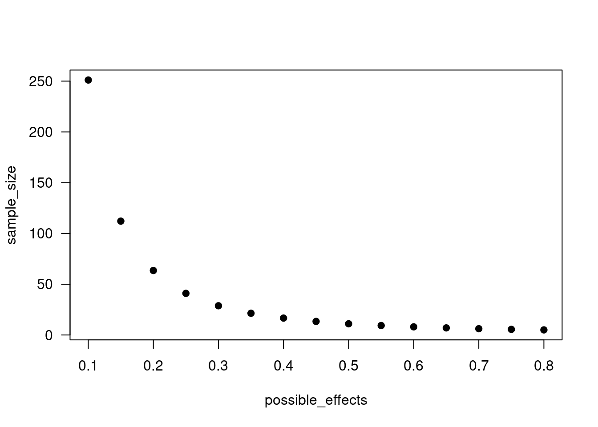
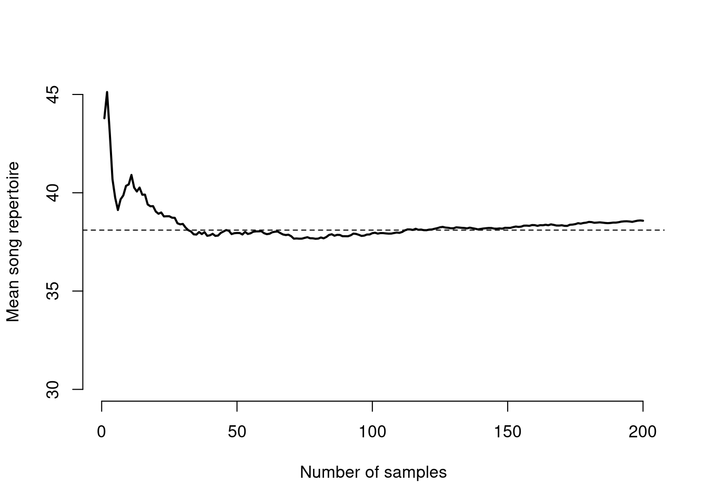

4 Inference
One of the goals of statistics is to make inference about the natural world. We make inference based on observations taken on our sample. In the Arctic butterfly example, the sample was the 2501 individual butterflies that Daly et al. measured. The observations are not just the length of each individual, but also their species identity (and lots of other data we did not dig into yet). In statistics, we assume that our sample is representative of the population. This does not mean a population in the ecological or evolutionary sense, but rather the universe that we are trying to make inference about. The way we defined the population for the t-tests was at the level of the species, i.e. we assumed the 968 Boloria chariclea individuals represented that species for the purposes of inference. The properties we measure on our sample are the variables at our disposal, i.e. species, length, growing degree days, region, etc. each matched to a single observation.
When making inference, we can assume that the sample mean is an unbiased estimator of the population mean if: 1. Individuals are randomly selected from the population. i.e. we did not just choose the closest butterflies, or the prettiest butterflies, or the slowest butterflies, etc. 2. Observations are independent of each other. i.e. not all the butterflies came from the same site, or the same person measured one species and a different person measured the other species, etc. This assumption is rarely met in ecology (…including in our t-tests that we did above). 3. The population parameter we are interested in can be described as a random variable, meaning that it comes from a probability distribution.
In calculating the sample mean \(\bar{x}\) and sample variance \(s^2\), we are trying to make inference about the population mean \(mu\) and variance \(\sigma^2\). The latter are our population parameters.
# define our population parameters
true_mean <- 17
true_variance <- 4
std.dev <- sqrt(true_variance)
# Sample some individuals from the population
# let's say we are still looking at butterfly sizes
# but we only have 32 individuals in our sample this time
n.obs <- 32
wing_length <- rnorm(n.obs, true_mean, sd = std.dev)
# What is the mean estimated from this sample?
mean(wing_length)## [1] 16.69938# How close it is to the true population mean?
plot(x=seq(10, 30, 0.1),
y=dnorm(seq(10, 30, 0.1), mean = true_mean, sd = std.dev),
type="l",
ylab="Density",
xlab="Value",
las=1)
abline(v=mean(wing_length), lty=2) # sample mean
abline(v=17, lty=1) # true mean
# What if we repeated this sample?
plot(x=seq(10, 30, 0.1),
y=dnorm(seq(10, 30, 0.1), mean = true_mean, sd = std.dev),
type="l",
ylab="Density",
xlab="Value",
las=1)
abline(v=mean(wing_length), lty=2) # sample mean
abline(v=17, lty=1) # true mean
abline(v=mean(rnorm(n.obs, true_mean, std.dev)), lty=2, col="tomato2") # a new sampleFrequentist statistics assumes that population parameters are fixed, and the data are random. Bayesians, on the other hand, assume that the data are fixed and the parameters are random. In other words, frequentists assume that the world works in a certain way and we observe it imperfectly each time we collect a sample, while Bayesians tend to think more in terms of probability distributions that could have generated the data that we observed. # Central limit theorem
As our sample size increases, the sample mean \(\bar{x}\) will more closely approximate the population mean \(\mu\). To demonstrate this, we are going to use something called a for loop. A for loop allows us to iterate a process.
One way to think about a for loop is as a set of instructions for an extremely literal toddler. Pretend you have this bowl of fruit, and you need the toddler to pick up a piece of fruit, bring it to the kitchen, wash it, put it into a new bowl, and then repeat this for the next fruit. They can only carry one fruit at a time. How we would write this as a for loop is to first specify what they will be working with, i.e. “for each fruit in the fruit bowl” is written as for(fruit in fruit_bowl). Then, the next step would be “take fruit to kitchen” which might be to_kitchen(fruit), and so on. In the code below, we will use the print() function instead because there is no such thing as a to_kitchen function (unless you write it yourself).
fruit_bowl <- c("kiwi", "banana", "apple", "pomegranate", "pear")
for(fruit in fruit_bowl){
print(paste("pick up", fruit)) # paste is a function that concatenates strings
print(paste("take", fruit, "to kitchen"))
print(paste("wash", fruit))
print(paste("set", fruit, "in new bowl"))
}## [1] "pick up kiwi"
## [1] "take kiwi to kitchen"
## [1] "wash kiwi"
## [1] "set kiwi in new bowl"
## [1] "pick up banana"
## [1] "take banana to kitchen"
## [1] "wash banana"
## [1] "set banana in new bowl"
## [1] "pick up apple"
## [1] "take apple to kitchen"
## [1] "wash apple"
## [1] "set apple in new bowl"
## [1] "pick up pomegranate"
## [1] "take pomegranate to kitchen"
## [1] "wash pomegranate"
## [1] "set pomegranate in new bowl"
## [1] "pick up pear"
## [1] "take pear to kitchen"
## [1] "wash pear"
## [1] "set pear in new bowl"A more common way to use for loops is with an index. Rather than setting up our fruit bowl in advance, we instead have a list of fruits and we can subset each one based on numbers. i.e. fruit_bowl[1] is "kiwi". What is nice about this is you can combine different vectors and subset them by the same index.
fruits <- c("apples", "bananas", "grapes")
# here we use i as a placeholder to stand for index
for(i in 1:3){
print(fruits[i])
}## [1] "apples"
## [1] "bananas"
## [1] "grapes"# add in a second vector of adjectives
adjectives <- c("decent", "disgusting", "just okay")
for(i in 1:3){
print(paste(fruits[i], "are", adjectives[i]))
}## [1] "apples are decent"
## [1] "bananas are disgusting"
## [1] "grapes are just okay"You can also nest for loops within each other, but that is for a different day. What we want to use for loops for right now is to combine them with a probability density function (rnorm) to visualize the central limit theorem.
# Using the same population parameters as above, if we were to sample more
# individuals, would we converge towards the true mean?
n.samples <- 200
more_samples <- rnorm(n.samples, true_mean, sd = std.dev)
running_avg <- c()
for(i in 1:n.samples){
running_avg[i] <- mean(more_samples[1:i])
}
plot(running_avg,
type="l",
lwd=2,
ylim=c(16, 18),
ylab="Mean wing size",
xlab="Number of samples",
axes=F,
las=1)
axis(1); axis(2)
abline(h=true_mean, lty=2)
4.1 Confidence intervals
Remember that in a frequentist approach to inference, the population parameters are fixed and the data are random. This means that sometimes our sample will not contain the true population mean. Using the standard deviation of our data and our significance threshold, we can generate a confidence interval to describe this process. Often, people will use a 95% confidence interval because it matches the convention of \(\alpha = 0.05\). What a 95% confidence interval tells us is that 95% of the time, if you go out and calculate an interval in this way, it will contain the true population mean.
plot(x=seq(10, 30, 0.1),
y=dnorm(seq(10, 30, 0.1), mean = true_mean, sd = std.dev),
type="l",
ylab="Density", xlab="Value",
axes=F)
axis(1); axis(2)
ci <- c(true_mean-1.96*std.dev, true_mean+1.96*std.dev)
xvals <- seq(ci[1], ci[2], 0.1)
polygon(x = c(xvals, rev(xvals)),
y = c(dnorm(xvals, true_mean, std.dev),
rep(0, length(xvals))),
col="#bb5406bb", border=F)
text(ci[1], 0, "μ - 1.96*σ", cex=1.5)
text(ci[2], 0, "μ + 1.96*σ", cex=1.5) That means if you went out and collected observations on a sample (e.g. 32 butterflies) and then repeated that 100 times (i.e. 100 replicates of each sample, so 320 total individual butterflies, but observed independently in 100 different replicates, each with a sample size of 32), you would expect that 95 out of those 100 confidence intervals would include the true population mean.
That means if you went out and collected observations on a sample (e.g. 32 butterflies) and then repeated that 100 times (i.e. 100 replicates of each sample, so 320 total individual butterflies, but observed independently in 100 different replicates, each with a sample size of 32), you would expect that 95 out of those 100 confidence intervals would include the true population mean.
n.sp1 <- 40
n.sp2 <- 30
mu.sp1 <- 17
mu.sp2 <- 22
true_diff <- mu.sp1 - mu.sp2
n.reps <- 100
# set up placeholder objects
rep_diff <- rep_low <- rep_up <- contains_true <- c()
for(i in 1:n.reps){
sample.sp1 <- rnorm(n.sp1, mu.sp1, sd=1)
sample.sp2 <- rnorm(n.sp2, mu.sp2, sd=1)
mod1 <- t.test(sample.sp1, sample.sp2)
rep_diff[i] <- mean(sample.sp1) - mean(sample.sp2)
rep_low[i] <- mod1$conf.int[1]
rep_up[i] <- mod1$conf.int[2]
contains_true[i] <- as.logical(rep_low[i]<true_diff & rep_up[i]>true_diff)
}
plot(rep_diff ~ seq(1, n.reps, 1), ylim=c(-7, -3))
arrows(x0=seq(1, n.reps, 1), y0=rep_low, y1=rep_up, code=3, angle=90, length=0.05)
abline(h=true_diff)
## contains_true
## FALSE TRUE
## 3 97
4.2 Credible intervals
We will get to Bayesian statistics later in the semester, but for now, know that the Bayesian equivalent of a confidence interval is called a credible interval. The interpretation of a 95% Bayesian credible interval is that there is a 95% probability that the true population mean lies within that interval. This is frequently mixed up in the literature and frequentists often describe confidence intervals as if they are credible intervals but this is 100% not true.